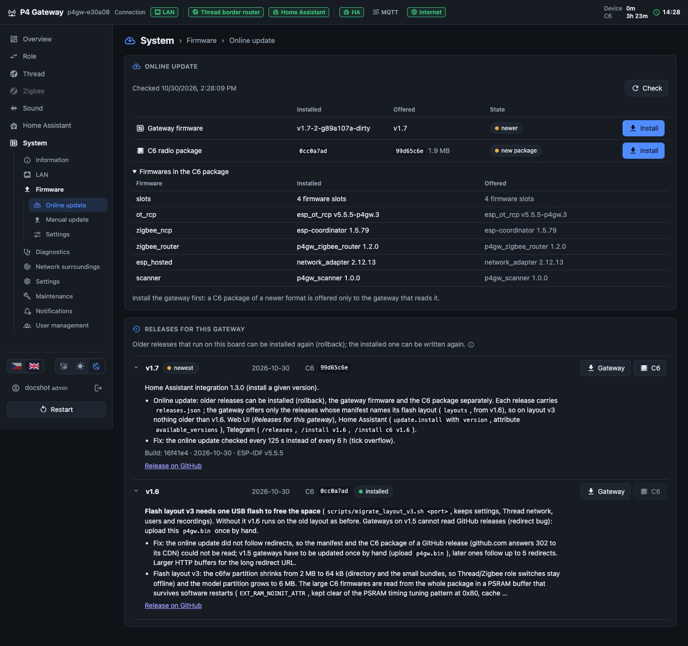
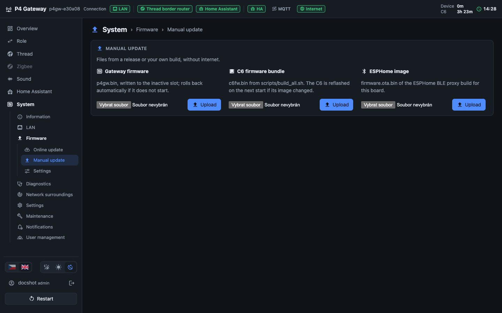
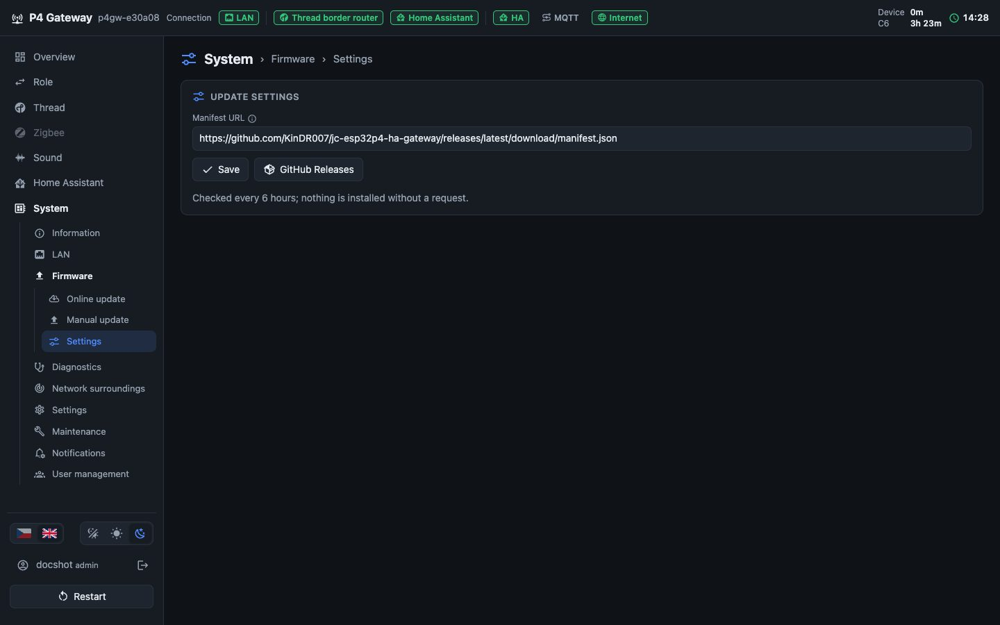

P4 Gateway documentation
Introduction
The P4 Gateway turns the Guition JC-ESP32P4-M3-DEV board into a LAN gateway for Home Assistant. The ESP32-P4 runs the gateway, the web UI and sound recognition; the ESP32-C6 in the module is the 2.4 GHz radio. One role runs at a time and is switched in the web UI, from Home Assistant or from Telegram.
| Role | P4 | C6 | Home Assistant |
|---|---|---|---|
| Thread border router | OpenThread BR, REST on port 8081 | ot_rcp | OpenThread Border Router + Thread integrations, Matter |
| Thread router | joins an existing Thread network | ot_rcp | nothing, extends the mesh |
| Zigbee coordinator | UART–TCP bridge, port 6638 | ZBOSS NCP | Zigbee2MQTT, adapter: zboss |
| Zigbee router | monitor and commands | own router firmware | joins by permit join |
| ESPHome BLE proxy | ESPHome image | esp-hosted | ESPHome integration |
Independent of the role (except ESPHome): sound recognition with the onboard microphone (YAMNet, 521 sound classes), noise level in dB(A), notifications, user accounts and the Telegram bot.
Hardware
Module JC-ESP32P4-M3: ESP32-P4NRW32 (16 MB flash, 32 MB PSRAM) with an ESP32-C6. Inside the module the P4 and the C6 share only SDIO (used by the ESPHome role) and the C6 reset. Thread and Zigbee need a UART, which exists only on header JP1: three jumper wires (female–female dupont) are needed.
| JP1 from | JP1 to | Purpose |
|---|---|---|
| 13 (P4 GPIO4, TX) | 20 (C6 U0RXD) | UART P4 → C6 |
| 15 (P4 GPIO5, RX) | 22 (C6 U0TXD) | UART C6 → P4 |
| 17 (P4 GPIO20) | 24 (C6 IO9 / BOOT) | the P4 flashes the C6 through its ROM bootloader |
Check pin 1 with a multimeter first (3.3 V against GND; pin 2 shows 5 V). Pin 26 stays free, the P4 drives the C6 reset inside the module. The ESPHome role works without jumpers.
USB-C next to the Ethernet jack: CH340, console and flashing (opening the port resets the board). Ethernet IP101 at 100 Mb/s; power over USB-C.
First installation
- Back up the factory flash of the P4 (it also holds the factory C6 app):
scripts/backup_flash.sh /dev/cu.wchusbserial* esp32p4 backups/p4_backup.bin - Wire the three JP1 jumpers (above).
- Flash the gateway:
scripts/flash_p4.sh /dev/cu.wchusbserial*(the firmware comes fromscripts/build_all.shintodist/). - Open
http://p4gw-xxxxxx.local/(the name ends with the last digits of the MAC). The gateway starts in maintenance mode. - System › Maintenance › Back up C6 flash (about 3.5 min) and keep the file: it is the only copy of the factory C6 firmware.
- System › User management › Users › New user: the first account is the admin. From then on the gateway asks for sign-in.
- Role: choose the role. Zigbee roles flash the C6 (about 25 s), Thread roles take about 15 s.
Flash layout v3 (from v1.6): the P4 keeps only the small C6 bundles; the large C6 firmwares come from the release package, which the gateway downloads when the C6 needs them (or an upload of c6fw.bin). Boards with the older layout move once over USB: scripts/migrate_layout_v3.sh <port> (settings, Thread network, users and recordings stay).
Web UI basics
Header: status tags, outlined when the link works and grey when it is off. Point at a tag (or tap it) for details. From the left: LAN, the active role, its client (Zigbee2MQTT or Home Assistant over the OTBR REST API), the P4 Gateway integration (HA), MQTT and internet; on the right the uptime of the gateway with the Zigbee2MQTT session or the C6 uptime, and the gateway clock.
Menu on the left: sections and their pages; pages of a role that is not active are greyed out. At the bottom: language (flags), theme (system, light, dark), the signed-in user (My account, sign-out) and Restart, which after a confirmation resets the C6 radio and right after it the P4.
A page the account may only read shows a note and its buttons that change something are disabled. Hidden pages are not in the menu at all.


Dialogs


Web UI pages
Overview
The state of the gateway at a glance.
Role
Active role, its state and the client using it.

Network
Ethernet link, IPv4 and IPv6 addresses, hostname.

ESP32-P4
Firmware version, uptime, temperature, memory and CPU load.

ESP32-C6 radio
Firmware of the radio, its temperature and uptime (telemetry of the role firmware).

Whole page (3)


Role
Choose what the gateway does. Switching stores the role and restarts the gateway; Zigbee network data and the Thread network are kept.
Select role
One card per role with what runs on the P4, the C6 and what to set up in Home Assistant. Switch asks for a confirmation.

How to
- Pick the role and press Switch.
- The gateway restarts; a dialog shows the progress (C6 flashing for Zigbee).
- Set up Home Assistant as shown under Home Assistant › Guide.
Also possible: the Role select of the P4 Gateway integration, Telegram /role zigbee_coordinator, MQTT p4gw/<host>/role/set.
Whole page (2)


Thread › Information
State of the Thread network (Thread roles only).
Thread
Role in the network (leader, router, child), network name, channel, PAN ID, addresses.

Border routing
Prefixes routed to the LAN (OMR), NAT64, SRP server and the last contact of Home Assistant.

Whole page (1)

Thread › Topology
Map of the mesh: routers and their children, link quality; device names from the Matter Server when available.
Network map
Ring or signal layout (shorter edge = better link), zoom and pan; point at a node for details.

Devices in the network
Matter devices with vendor, product and firmware.

Neighbors
Direct neighbours of the gateway with RSSI and link quality.

Routers
All routers of the partition.

Whole page (1)

Thread › Diagnostics
The radio co-processor and the OpenThread command line.
Radio co-processor (RCP)
RCP version and failures; after a failure the gateway reflashes the C6 by itself.

MAC counters
Frames sent and received, retries and errors.

OpenThread CLI
Commands of the OpenThread CLI, e.g. state, neighbor table, ping.

Whole page (1)

Thread › Settings
Dataset of the network and transmit power.
Network dataset
Name, channel, PAN IDs; the network key and TLVs only on request. Apply dataset joins another network.

Transmit power
-15 to 20 dBm, kept across restarts.

How to
Join the preferred network of Home Assistant (one Thread network instead of two):
- Home Assistant: Settings › Devices & services › Thread › (network) › show the active dataset TLVs and copy them.
- Gateway: Thread › Settings › paste into Apply dataset and confirm.
Whole page (1)

Zigbee › Information
The coordinator bridge, or the router and its network (Zigbee roles only).
Coordinator bridge
TCP port 6638 for Zigbee2MQTT, the connected client and the session.

Zigbee router
Router state, parent, channel and PAN.

Network membership
Join network (steer) after permit join in the coordinator; leave or factory reset.

Transmit power
Transmit power of the router.

Whole page (2)


Zigbee › Diagnostics
Traffic of the bridge and the C6 link.
Traffic
Bytes and frames between Zigbee2MQTT and the NCP, dropped data.

C6 link
UART speed, errors and C6 resets; Reset C6.

Zigbee router
Router counters and log.

Whole page (2)


Zigbee › Network backups
Copies of the coordinator and router network data kept in the gateway flash; made before leaving a Zigbee role and automatically (daily or weekly).
Zigbee network backups
Generation, size and time of each copy; download; Back up now.

Whole page (1)

Zigbee › Network and devices
The Zigbee network seen through Zigbee2MQTT over MQTT (works in any role).
Zigbee2MQTT
Base topic and bridge state; needs the MQTT connection of the gateway.

Permit join
Open the network for new devices for a while.

Network map
Network map from Zigbee2MQTT with link quality.

Zigbee devices
Devices with model, power source and last seen.

Whole page (2)


Sound › Live
Microphone, noise level and the recognition model.
Microphone
On or off, gain, level gate (the model runs only above it), live level, a 5 s recording.

Noise level
A-weighted level LAS, LAeq and LAmax over 60 s in dB(A). Calibrate: enter the reading of a sound level meter.

Sound recognition (YAMNet)
Recognition on or off, run time and CPU share of the model, model upload.

Heard now
Top classes of the last windows with their scores.

How to
Calibrate the noise level: put a sound level meter (or a phone app) next to the gateway, set it to A-weighting and slow, wait for a steady sound and enter its reading under Noise level › Calibrate. Without calibration the level is an estimate (±6 dB).
Whole page (1)

Sound › Events
Groups of sound classes sent to Home Assistant as events (dog barking, doorbell, glass breaking, smoke alarm…).
Events sent to Home Assistant
Presets (household, security, animals, minimal), each event with classes, threshold, windows, hold and cooldown; edit, add, export and import.

How to
- Pick a preset or press Add event.
- Choose the classes (Sound selection shows all 521), threshold (0.5 to start) and timing.
- Save: Home Assistant gets an event entity and a binary sensor per enabled event.
Whole page (1)

Sound › Detection log
Last detections with class, score, level and duration.
Detection log
Filter by event; a row shows which class triggered it.

Whole page (1)

Sound › Sound selection
All 521 AudioSet classes as a tree; excluded classes never trigger anything.
All sounds
Search, Czech names, the events that use a class.

Whole page (1)

Sound › Learned sounds
Own sounds the model does not know: recorded samples and a profile (embedding similarity or a tone).
Record
Record 0.96 s samples of the sound, or upload a WAV.

Background
Record the normal background; the suggested threshold lies between it and the samples.

Learned sounds
Profiles with samples, threshold and test.

Whole page (1)

Home Assistant › Guide
Steps for Home Assistant with the current address of the gateway; one-click buttons for the integration.
P4 Gateway integration
Open in HACS, start the setup.

Thread border router → Home Assistant
OTBR integration URL, Thread and Matter steps.

Zigbee coordinator → Zigbee2MQTT (recommended)
Zigbee2MQTT configuration.

Whole page (2)


Home Assistant › MQTT
Optional MQTT link with Home Assistant discovery (the integration does not need it).
MQTT (optional)
Broker URI (mqtt://, mqtts://, ws://, wss://), user, password, TLS certificate, advanced options; state and last error.

How to
With the P4 Gateway integration in use, turn off Home Assistant discovery here, otherwise every entity exists twice. MQTT is still needed for Zigbee › Network and devices (Zigbee2MQTT topics).
Whole page (1)

Home Assistant › ESPHome
The ESPHome Bluetooth proxy role: the gateway restarts into the ESPHome image.
ESPHome BLE proxy role
Image version and the way back (Gateway role select and Return to gateway button of the ESPHome device in Home Assistant).

Whole page (1)

System › Information
Hardware and firmware details.
Firmware slots
Gateway A/B, ESPHome: version, state, which runs and which boots.

ESP32-P4
Chip revision, CPU, temperature, flash and PSRAM.

Memory
Internal RAM and PSRAM, minimum since start, NVS.

Firmware
Version, build, ESP-IDF, reset reason.

ESP32-C6 radio
MAC, revision, flash, bundles stored for the C6.

Whole page (1)

System › LAN
Ethernet settings and traffic.
LAN settings
DHCP or a static address with netmask, gateway and DNS; link speed and duplex.

Current state
What is in effect now.

Traffic
RX/TX rate, totals since start and the split per service (web UI, OTBR REST, Zigbee2MQTT, MQTT, mDNS, DNS/NTP, HTTPS, Thread routed).

How to
- Choose Static, fill in the address, netmask, gateway and DNS, press Apply.
- The page opens on the new address; confirm the banner within 120 s. Without confirmation the previous settings come back by themselves.
- Zigbee2MQTT uses the address: change it there too. The P4 Gateway integration finds the new address over mDNS.
Whole page (1)

System › Firmware › Online update
Updates from the manifest (by default the latest GitHub release), older releases (rollback).
Online update
Installed and offered version of the gateway firmware and of the C6 package with their state and Install; Check reads the manifest now. Firmwares in the C6 package lists every C6 firmware installed and offered.

Releases for this gateway
Releases that run on the flash layout of the board, one expandable row each with its notes, build and link: Gateway and C6 install that release (an older one is a rollback), Reflash writes the installed one again.

How to
- Install the gateway first when both are newer: a C6 package of a newer format is offered only to a gateway that reads it.
- C6 package: the gateway downloads it into RAM, checks its sha256 against the manifest, stores it and restarts; the C6 then gets the new firmware (about 2 minutes without Thread or Zigbee).
- Rollback: open Releases for this gateway and press Gateway or C6 at an older release. Settings stay; functions added later are missing until the next update.
Also from Home Assistant (Firmware and C6 radio firmware update entities, update.install with version) and Telegram (/update, /releases, /install, /install c6, /install v1.6).
Whole page (1)


System › Firmware › Manual update
Uploads without internet.
Manual update
p4gw.bin (written to the other slot, confirmed after 60 s, otherwise rolled back), c6fw.bin (the C6 gets the new firmware on the next start; also when the gateway asks for it in maintenance) and esphome.bin for the ESPHome role.

How to
The files come from a GitHub release or from scripts/build_all.sh.
Whole page (1)


System › Firmware › Settings
Where the online update looks.
Update settings
Manifest URL: GitHub Releases fills in the address of the latest release (the default), your own web server works too; saved empty turns the online update off. Checked every 6 hours, nothing is installed without a request.

How to
Own server: scripts/make_update_manifest.py writes manifest.json next to p4gw.bin and c6fw.bin (docs/installation.md).
Whole page (1)


System › Diagnostics
Tools when something does not work.
Ping
Ping a host from the gateway.

Diagnostics
Core dump after a crash (download, erase), log before the last restart.

Log
Live log with filters by source, level and tag; save to a file.

Whole page (1)

System › Network surroundings
Scan of the 2.4 GHz band to place a Thread, Zigbee or Wi-Fi network.
Scan
Quick (Thread roles, no outage, about 13 s) or full (any role, about a minute without the role).

Recommendation
Best channels for Thread and Zigbee.

2.4 GHz spectrum
Wi-Fi and 802.15.4 channels together.

IEEE 802.15.4 channels
Energy, networks and rating per channel 11–26.

Thread and Zigbee networks
Networks found nearby.

Wi-Fi networks
Access points with channel and signal (full scan).

Whole page (1)

System › Settings
Hostname, Matter Server and the settings backup.
Home Assistant and Matter
Home Assistant found over mDNS; Matter Server URL for device names in the Thread map.

Settings
Hostname (applies after a restart). Accounts and passwords are in User management.

Settings backup
Export and import of all settings; passwords, accounts and tokens only when chosen.

Whole page (1)

System › Maintenance
Restart, C6 reflash and backup.
Maintenance
Restart (P4), Reflash C6 now (after an RCP or NCP failure), Back up C6 flash (in maintenance mode, about 3.5 min).

Whole page (1)

System › Notifications
The Telegram bot (admins) and where Home Assistant notifications are set.
Telegram bot
Token from @BotFather, on/off, time zone for quiet hours; state and paired users.

Home Assistant
The integration gets every notification; levels per topic are set in its options.

How to
- Telegram: open @BotFather, send
/newbot, choose a name and a user name ending withbot. - Paste the token here, tick Bot on, save. The state turns to running, @yourbot.
- Every user pairs a chat in My account › Telegram and notifications.
Whole page (1)

System › User management › Users
Accounts of the web UI (admins only).
Users
Name, role, 2FA, state (active, locked, disabled, must change the password), last sign-in, sessions; New user, Edit, delete.

How to
- New user: name, role and a temporary password (generated); the user changes it at the first sign-in.
- Edit: role, disable, new password, turn off 2FA (lost phone), unlock, and own permissions page by page instead of the role.
Admins always have every right; the last admin cannot be removed or demoted.
Whole page (1)

System › User management › Roles and permissions
What the user and viewer roles see and may change, page by page: hidden, read or edit. The gateway enforces it for every API call.
Roles and permissions
Matrix of pages × roles; Defaults returns the default levels.

Whole page (1)

System › User management › API tokens
Tokens for Home Assistant and scripts (Authorization: Bearer p4gw_…), each with a role; shown only once.
API tokens
Name, role, created, last use; New token, Revoke.

Whole page (1)

System › User management › Reset requests
Requests sent from the sign-in page (Forgot password); admins also get a notification.
Password reset requests
Set password (temporary, changed at the next sign-in) or Dismiss.

Whole page (1)

System › User management › Security
Rules of the sign-in.
Sign-in security
Sign-out after inactivity, how long "Stay signed in" lasts, minimum password length, attempts before a lock and its duration, two-factor sign-in required per role.

Whole page (1)

My account
Own account: password, two-factor sign-in, Telegram and notifications.
Account
Change password (other sessions end), sign out other sessions.

Two-factor sign-in
Set up with Google Authenticator (or another TOTP app) and 10 recovery codes.

Telegram and notifications
Pair a chat, level per topic, quiet hours, language of the bot, test message.

How to
Two-factor sign-in: Set up › scan the QR code › enter the 6-digit code › keep the recovery codes (each signs in once instead of the app code).
Telegram: Pair › open the link in Telegram and press Start (or send /start <code>). Then set the levels per topic and save.
Whole page (1)

Home Assistant
P4 Gateway integration
- Install: Open in HACS (Home Assistant › Guide) or copy
custom_components/p4gwto/config/custom_components/; restart Home Assistant. - The gateway appears under Settings › Devices & services › Discovered (mDNS
_p4gw._tcp), or add it: Add integration › P4 Gateway › address. - With user accounts on the gateway it asks for an API token: create one under System › User management › API tokens (role admin, or user when the integration should not restart or update) and paste it. The token does not depend on any user or their 2FA.
- Configure (integration options): per topic from which level a persistent notification appears (off, critical only, warnings and critical, all).
Entities: active role, Thread state, noise and noise max in dB(A), role select, sound recognition switch, one event and binary sensor per sound event, Notification event (for automations), firmware update and C6 radio firmware update, restart, identify, Zigbee backup and update check buttons, diagnostic sensors.
Thread and Matter
- Settings › Devices & services › Add integration › OpenThread Border Router, URL
http://<gateway>:8081. - Thread › Configure: mark the network as preferred, or join the gateway to the existing network (Thread › Settings › Apply dataset).
- Phone: Companion app › Sync Thread credentials. Matter: Matter Server add-on, Add device › Matter.
- Network: IPv6 and router advertisements on the Home Assistant host, no multicast filtering between Home Assistant and the gateway.
Zigbee2MQTT
serial: port: tcp://<gateway>:6638 adapter: zboss advanced: transmit_power: 20
One TCP client at a time. ZHA cannot use this coordinator (no ZBOSS support in Home Assistant).
ESPHome BLE proxy
Role › ESPHome BLE proxy; Home Assistant discovers the ESPHome node, enter its API key. Back with the Gateway role select and Return to gateway.
Telegram bot
| Command | What it does | Right | Confirmation |
|---|---|---|---|
/help | commands the account may use | – | – |
/status | role, LAN, internet, MQTT, uptime, temperature | Overview, read | – |
/lan | link, addresses, traffic | System › LAN, read | – |
/thread, /zigbee | state of the role | Information, read | – |
/noise | noise in dB(A) | Sound › Live, read | – |
/events | last detections | Sound › Detection log, read | – |
/update | gateway and C6 versions, build, release notes | System › Firmware, read | – |
/install, /install c6 | install the gateway firmware or the C6 package | System › Firmware, edit | yes |
/restart | restart C6 and P4 | System › Maintenance, edit | yes |
/identify | blink the identify icon | Overview, edit | yes |
/role <name> | switch the role | Role, edit | yes |
/sound on|off | sound recognition | Sound › Live, edit | yes |
/mute 1h | mute sound notifications (30m, 1d, off) | – | – |
Confirmation: Confirm / Cancel buttons (2 minutes); for an account with two-factor sign-in the bot then asks for the authenticator code — send it as a normal message. Notifications arrive within about 5 s; security ones only to admins; in quiet hours only critical ones.
Troubleshooting
| Situation | What to do |
|---|---|
| Role does not start | The UI shows maintenance with the reason; choose another role or fix it and restart. |
| C6 does not answer | Check the JP1 jumpers, System › Maintenance › Reflash C6 now. |
| Bad gateway update | Automatic rollback to the previous slot; otherwise scripts/flash_p4.sh. |
| Crashes | System › Diagnostics: core dump and the log before the last restart. |
| Static address that does not work | Not confirmed: back after 120 s by itself. Confirmed: http://<host>.local/ over IPv6, or import a settings backup. |
| Forgotten password | Forgot password on the sign-in page; an admin sets a temporary one. |
| Lost phone with the authenticator | A recovery code instead of the app code, or an admin turns off 2FA (Users › Edit). |
| New board | System › Settings › Settings backup: export (with passwords) and import on the new board. |
| Maintenance: "the C6 firmware package is not on the gateway" | The C6 needs its large firmwares (first start, C6 update, reflash, ESPHome) and the package is neither in RAM nor downloadable: connect the gateway to the internet, or upload c6fw.bin of the release under System › Firmware and restart. |
Screenshots: firmware v1.4, dark theme, English. The board, network names and addresses are those of the test setup.